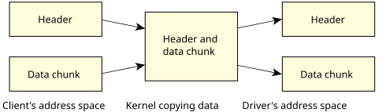
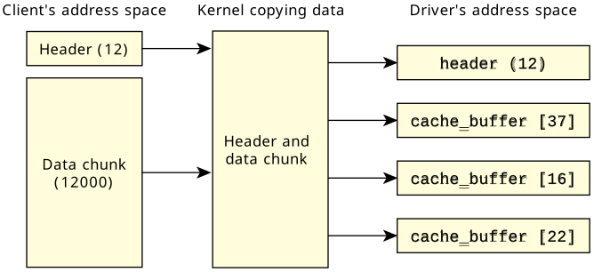

Until now, we've shown only message transfers happening from one buffer in the client's address space into another buffer in the server's address space. (And one buffer in the server's space into another buffer in the client's space during the reply.)
ssize_t write (int fd, const void *buf, size_t nbytes)
{
char *newbuf;
io_write_t *wptr;
ssize_t nwritten;
newbuf = malloc (nbytes + sizeof (io_write_t));
// fill in the write_header at the beginning
wptr = (io_write_t *) newbuf;
wptr -> type = _IO_WRITE;
wptr -> nbytes = nbytes;
// store the actual data from the client
memcpy (newbuf + sizeof (io_write_t), buf, nbytes);
// send the message to the server
nwritten = MsgSend (fd,
newbuf,
nbytes + sizeof (io_write_t),
newbuf,
sizeof (io_write_t));
free (newbuf);
return (nwritten);
}
See what happened? A few bad things:
Since the kernel is going to copy the data anyway, it would be nice if we could tell it that one part of the data (the header) is located at a certain address, and that the other part (the data itself) is located somewhere else, without the need for us to manually assemble the buffers and to copy the data.
As luck would have it, QNX OS implements a mechanism that lets us do just that!
The mechanism is something called an IOV,
standing for Input/Output Vector.
#include <sys/neutrino.h>
ssize_t write (int fd, const void *buf, size_t nbytes)
{
io_write_t whdr;
iov_t iov [2];
// set up the IOV to point to both parts:
SETIOV (iov + 0, &whdr, sizeof (whdr));
SETIOV (iov + 1, buf, nbytes);
// fill in the io_write_t at the beginning
whdr.type = _IO_WRITE;
whdr.nbytes = nbytes;
// send the message to the server
return (MsgSendv (coid, iov, 2, iov, 1));
}
First of all, notice there's no malloc() and no memcpy(). Next, notice the use of the iov_t type. This is a structure that contains an address and length pair, and we've allocated two of them (named iov).
typedef struct iovec {
union {
void *iov_base;
const void *iov_base_const;
};
_Sizet iov_len;
} iov_t;
#include <sys/neutrino.h>
#define SETIOV(_iov, _addr, _len) \
*(__iov) = (iov_t){ .iov_base = (void *)(__addr), .iov_len = (__len) }
SETIOV() accepts an iov_t, and the address and length data to be stuffed into the IOV.
Also notice that since we're creating an IOV to point to the header, we can allocate the header on the stack without using malloc(). This can be a blessing and a curse—it's a blessing when the header is quite small, because you avoid the headaches of dynamic memory allocation, but it can be a curse when the header is huge, because it can consume a fair chunk of stack space. Generally, the headers are quite small.
#include <sys/neutrino.h>
long MsgSendv (int coid,
const iov_t *siov,
size_t sparts,
const iov_t *riov,
size_t rparts);
Let's examine the arguments:
This is how the kernel views the data:

The kernel just copies the data seamlessly from each part of the IOV in the client's space into the server's space (and back, for the reply). Effectively, the kernel is performing a gather-scatter operation.
A few points to keep in mind:
limitedto 524288; however, our example of 2 is typical.
write (fd, buf, 12000);which generated a two-part IOV of:
// set up the IOV structure to receive into: SETIOV (iov + 0, &header, sizeof (header.io_write)); SETIOV (iov + 1, &cache_buffer [37], 4096); SETIOV (iov + 2, &cache_buffer [16], 4096); SETIOV (iov + 3, &cache_buffer [22], 4096); rcvid = MsgReceivev (chid, iov, 4, NULL);
This code does pretty much what you'd expect: it sets up a four-part IOV structure, sets the first part of the structure to point to the header, and the next three parts to point to cache blocks 37, 16, and 22. (These numbers represent cache blocks that just happened to be available at that particular time.) Here's a graphical representation:

Then the MsgReceivev() function is called, indicating that we'll receive a message from the specified channel (the chid parameter) and that we're supplying a four-part IOV structure. This also shows the IOV structure itself. (Apart from its IOV functionality, MsgReceivev() operates just like MsgReceive().)
Oops! We made the same mistake as we did before, when we introduced the MsgReceive() function. How do we know what kind of message we're receiving, and how much data is associated with it, until we actually receive the message?
rcvid = MsgReceive (chid, &header, sizeof (header), NULL);
switch (header.message_type) {
…
case _IO_WRITE:
number_of_bytes = header.io_write.nbytes;
// allocate / find cache buffer entries
// fill three-part IOV with cache buffers
MsgReadv (rcvid, iov, 3, sizeof (header.io_write));
This does the initial MsgReceive() (note that we didn't use the IOV form for this—there's really no need to do that with a one-part message), figures out what kind of message it is, and then continues reading the data out of the client's address space (starting at offset sizeof (header.io_write)) into the cache buffers specified by the three-part IOV.
Notice that we switched from using a four-part IOV (in the first example) to a three-part IOV. That's because in the first example, the first part of the four-part IOV was the header, which we read directly using MsgReceive(), and the last three parts of the four-part IOV are the same as the three-part IOV—they specify where we'd like the data to go.
You can imagine how we'd perform the reply for a read request:
Note that if the data doesn't start right at the beginning of a cache block (or other data structure), this isn't a problem. Simply offset the first IOV to point to where the data does start, and modify the size.